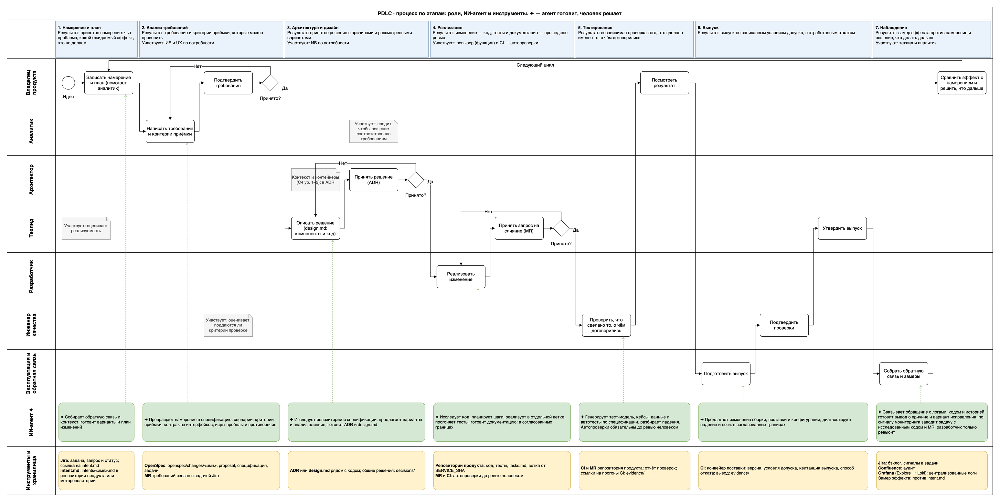

Направление · от базы к Dark Factory
Ступени harness и Dark Factory
Harness — агентская среда: то, что окружает ИИ-агента в работе, — инструменты, правила, автоматические проверки и журнал. Сначала человек проходит локальный harness сам, потом оркестрацию, и только затем разговор о Dark Factory становится осмысленным.
Трансформация: от классического PDLC к AI PDLC
Семь этапов PDLC: что делает человек и что агент.
1. Намерение и план
решает владелец продуктаЧеловекПишет и одобряет проблему, ожидаемый эффект и границы; помогает аналитик.
АгентСобирает обратную связь и контекст, готовит варианты и план изменений.
2. Анализ требований
подтверждает владелец продуктаЧеловекАналитик отвечает за бизнес-смысл и доводит спецификацию до подтверждаемой.
АгентПревращает намерение в спецификацию: сценарии, критерии приёмки, поиск пробелов и противоречий.
3. Архитектура и дизайн
утверждает архитектор (ADR)ЧеловекАрхитектор пишет design.md, формулирует ограничения и утверждает ADR.
АгентИсследует репозитории и спецификации, предлагает варианты и анализ влияния, готовит ADR и design.md.
4. Реализация
принимает техлидЧеловекРазработчик формулирует задачу и ограничения; техлид принимает MR.
АгентИсследует код, планирует шаги, реализует в отдельной ветке, прогоняет тесты, готовит документацию.
5. Тестирование
решает инженер качестваЧеловекОтвечает за стратегию проверки и приёмку; владелец продукта смотрит результат.
АгентГенерирует тест-модель, кейсы, данные и автотесты по спецификации, разбирает падения. Автопроверки обязательны до ревью человеком.
6. Выпуск
решает техлидЧеловекИнженер инфраструктуры готовит версию; инженер качества подтверждает проверки; допускает техлид.
АгентПредлагает изменения сборки, поставки и конфигурации, диагностирует падения и логи.
7. Наблюдение
решает владелец продуктаЧеловекЭксплуатация и аналитик ведут наблюдение; сигналы возвращаются в новое намерение.
АгентСвязывает обращение с логами, кодом и историей, готовит вывод о причине и вариант исправления.
Сквозной принцип: человек владеет целью и принимает решение, агент готовит и исполняет в заданных границах, автопроверки подтверждают результат до ревью человеком. Агент решений не принимает.

Ступени harness
Три ступени. Каждую человек проходит по очереди: пропустить первую нельзя.
Локальный harness
Один агент в терминале, хуки, pre-push, OpenSpec.
Человек: читает каждый diff.
Оркестрация локально
Несколько harness, диспетчер, журнал; ревью делает не автор.
Человек: читает итоги работы агентов и результаты обязательных проверок.
Dark Factory / облако
Агенты работают по расписанию, без человека в цикле кода.
Человек: задаёт намерение, принимает результат, наблюдает эффект.
Критерий первой ступени. Человек сам провёл изменение от намерения до Merge через агента в терминале: прочитал каждый diff и прогнал проверки.
Сейчас мы проходим первые две ступени — локальный harness и оркестрацию локально. Третья ступень — облачный harness в виде Dark Factory — показывает, куда мы стремимся; без dev-контура её пока не сделать.
Это близко по духу совету Anthropic из статьи «Building effective agents» (о создании агентных систем): искать самое простое решение и усложнять только тогда, когда это нужно.
Dark Factory
Верхняя ступень: человек задаёт намерение, код пишут и проверяют агенты.
Шкалу из пяти уровней, от острого автодополнения (spicy autocomplete) до Dark Factory, описал Дэн Шапиро в статье (январь 2026), пересказ есть у Саймона Уиллисона. Шкала построена по аналогии с уровнями автоматизации вождения (NHTSA).
Зачем
Скорость и масштаб без роста команды.
Что должно быть готово до неё
- стадии процесса;
- обязательные проверки;
- наблюдение;
- откат.
Что остаётся человеку
- намерение;
- критерии приёмки;
- наблюдение эффекта: результат против намерения, это этап 7.
Человек не читает код, но контролирует работу: контроль переезжает с кода на намерение, обязательные проверки и наблюдение.
Риски
Ошибка тиражируется без глаз: никто не читает код, поэтому обязательные проверки и наблюдение должны поймать её раньше.
Когда рано. Пока человек не прошёл локальный harness и оркестрацию, а перечисленное выше не готово: без этого непонятно, что контролировать и чем.
Вождение и автопилот — аналогия: сначала водишь сам и знаешь правила, потом включаешь автопилот. Все умеют писать, но многие печатают; здесь важен не навык руки, а контроль.
Бенчмарк: метод
Одна и та же задача на каждой ступени. Здесь только метод, без цифр.
- Одна и та же задача проходит все три ступени.
- На каждой ступени меряем время, стоимость и дефекты после ревью.
- Числа берём только из реального прогона. Пока прогона нет, цифр на странице нет.
Для сравнения
Похожие инструменты; это не рекомендация.
Temporal — открытая платформа durable execution, лицензия MIT. В такой схеме её можно использовать как детерминированный оркестратор: порядок стадий, переходы, блокирующие проверки, восстановление после сбоя.
Omnigent — открытый мета-harness над Claude Code, Codex, Pi и другими агентами. В такой схеме его можно использовать как агентный движок внутри шага.